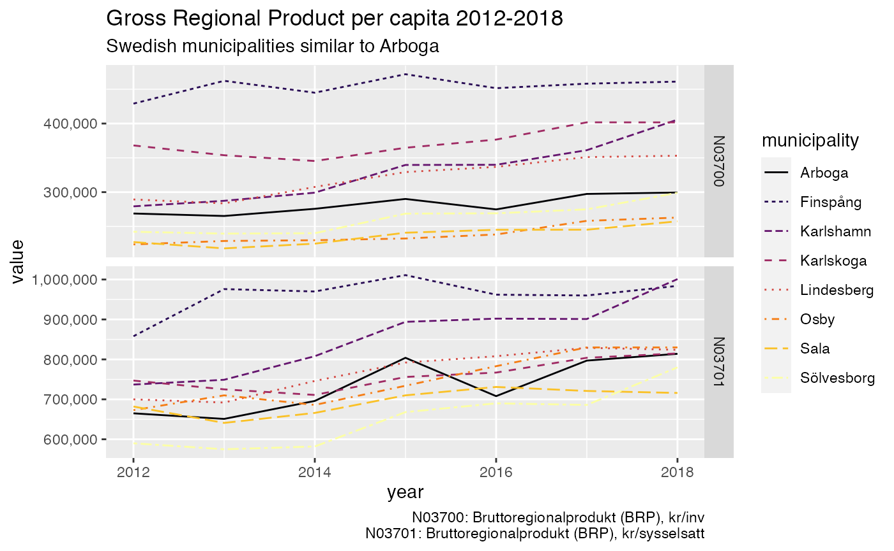

rKolada is an R package for downloading,
inspecting and processing data from Kolada, a Key Performance Indicator
database for Swedish municipalities and regions. This vignette provides
an overview of the methods included in the rKolada package
and the design principles of the package API. To learn more about the
specifics of functions and to see a full list of the functions included,
please see the Reference
section of the package homepage or run ??rKolada. For a
quick introduction to the package see the vignette A quick start guide to rKolada.
NOTE: All metadata and data labels in Kolada are written in Swedish only.
The design of rKolada functions is inspired by, and are
supported by, the design and functionality provided by several packages
in the tidyverse family. It is thus recommended that you
install the tidyverse package before installing
rKolada:
install.packages("tidyverse")
install.packages("rKolada")The Swedish Municipalities and Regions Database Kolada is a openly accessible,
comprehensive database containing over 4,000 Key Performance Indicators
(KPIs) for a vast number of aspects of municipal and regional
organisations, politics and economic life. The rKolada R
package provides an interface to R users to directly download, explore,
and simplify metadata and data from Kolada.
To get started with Kolada you might want to visit its homepage
(Swedish-only) or read through the REST API documentation on
Github. However, you can also use the rKolada package
to explore data without prior knowledge of the database.
Data in Kolada are stored along three basic dimensions:
When downloading data, the user needs to specify search parameters for at least two of these three basic dimensions. (The Kolada API documentation also specifies a fourth basic dimension: gender. However, data for all genders is always automatically downloaded when available.) The parameters can be a single, atomic value or a vector of values.
Also, the Kolada database proves useful groupings of municipalities and KPIs that can be used for further exploration, or to create unweighted averages. Lastly, some KPIs are also available for Organizational units (OUs) within municipalities, e.g. a school, an administrative subdivision or an elderly home.
If the user already has knowledge of the IDs of the KPIs and/or
municipalities they want to download, this can be done using the
function get_values(). For instance, if you want to
download all values for the KPI N00945 (“Tillfälliga
föräldrapenningdagar (VAB) som tas ut av män, andel av antal dagar (%)”)
for Sweden’s three most populous cities; Stockholm (id
"0180"), Gothenburg (Swedish: Göteborg;
"1480") and Malmö ("1280"):
n00945 <- get_values(
kpi = "N00945",
municipality = c("0180", "1480", "1280"),
period = 1970:2020
)
n00945
#> # A tibble: 75 × 9
#> kpi municipality_id year count gender status value municipality
#> <chr> <chr> <int> <int> <chr> <chr> <dbl> <chr>
#> 1 N00945 0180 1996 1 T "" NA Stockholm
#> 2 N00945 1280 1996 1 T "" NA Malmö
#> 3 N00945 1480 1996 1 T "" NA Göteborg
#> 4 N00945 0180 1997 1 T "" NA Stockholm
#> 5 N00945 1280 1997 1 T "" NA Malmö
#> 6 N00945 1480 1997 1 T "" NA Göteborg
#> 7 N00945 0180 1998 1 T "" 30.4 Stockholm
#> 8 N00945 1280 1998 1 T "" 26.7 Malmö
#> 9 N00945 1480 1998 1 T "" 30.5 Göteborg
#> 10 N00945 0180 1999 1 T "" 30.6 Stockholm
#> # … with 65 more rows, and 1 more variable: municipality_type <chr>In many cases, however, you will not know in advance exactly what KPIs to be looking for, or you might not know the IDs of Sweden’s municipalities.
get functions
Kolada has five different kinds of metadata entities Each one of
these can be downloaded by using rKolada’s get
functions. Each function returns a tibble with all
available data for the specified metadata entity:
get_kpi()
get_kpi_groups()
get_municipality()
get_municipality_groups()
get_ou()
Each function returns a tibble with all available data
for the specified metadata entity.
# Download all KPI metadata as a tibble (kpi_df)
kpi_df <- get_kpi()
kpi_df
#> # A tibble: 5,376 × 13
#> auspices description has_ou_data id is_divided_by_g… municipality_ty…
#> <chr> <chr> <lgl> <chr> <int> <chr>
#> 1 E Personalkostnad… NA N000… 0 K
#> 2 E Personalkostnad… FALSE N000… 0 K
#> 3 X Kommunalekonomi… FALSE N000… 0 K
#> 4 NA Externa intäkte… FALSE N000… 0 K
#> 5 NA Inkomstutjämnin… FALSE N000… 0 K
#> 6 NA Kostnadsutjämni… FALSE N000… 0 K
#> 7 X Regleringsbidra… FALSE N000… 0 K
#> 8 NA Utjämningssyste… FALSE N000… 0 K
#> 9 X Införandebidrag… FALSE N000… 0 K
#> 10 X Strukturbidrag,… FALSE N000… 0 K
#> # … with 5,366 more rows, and 7 more variables: operating_area <chr>,
#> # ou_publication_date <chr>, perspective <chr>, prel_publication_date <chr>,
#> # publ_period <chr>, publication_date <chr>, title <chr>All get functions are thin wrappers around the more
general function get_metadata(). If you are familiar with
the terminology used in the Kolada API for accessing metadata you might
want to use this function instead.
For each metadata type mentioned in the previous sections,
rKolada offers several convenience functions to help
exploring and narrowing down metadata tables. (If you are familiar with
dplyr semantics, most of these functions are basically
wrappers around dplyr/tidyr code.)
Since each get function above returns a table for the
selected entity, a metadata table can be one of five different types.
All metadata convenience functions are prefixed to reflect which kind of
metadata table they operate on: kpi, kpi_grp,
municipality, municipality_grp, and
ou.
All metadata convenience functions have been designed with functional piping in mind, so their first argument is always a metadata tibble. Most of them also return a tibble of the same type
The most important family of metadata convenience functions is the
search family. Much like dplyr::filter() they
can be used to search for one or several search terms in the entire
table or in a subset of named columns:
# Search for KPIs with the term "BRP" in their description or title
kpi_filter <- kpi_df %>% kpi_search("skola", column = c("description", "title"))
kpi_filter
#> # A tibble: 712 × 13
#> auspices description has_ou_data id is_divided_by_g… municipality_ty…
#> <chr> <chr> <lgl> <chr> <int> <chr>
#> 1 NA "Kostnadsutjämn… FALSE N000… 0 K
#> 2 NA "Kostnadsutjämn… FALSE N000… 0 K
#> 3 NA "Kostnadsutjämn… FALSE N000… 0 K
#> 4 T "Avvikelse i pr… FALSE N000… 0 K
#> 5 T "Strukturkostna… FALSE N001… 0 K
#> 6 E "Månadsavlönad … FALSE N001… 0 K
#> 7 E "Antal anställd… FALSE N001… 0 K
#> 8 E "Antal årsarbet… FALSE N001… 0 K
#> 9 T "Referenskostna… NA N001… 0 K
#> 10 X "Andel som har … FALSE N005… 1 A
#> # … with 702 more rows, and 7 more variables: operating_area <chr>,
#> # ou_publication_date <chr>, perspective <chr>, prel_publication_date <chr>,
#> # publ_period <chr>, publication_date <chr>, title <chr>
# Search for municipality groups containing the name "Arboga"
munic_g <- get_municipality_groups()
arboga_groups <- munic_g %>% municipality_grp_search("Arboga")
arboga_groups
#> # A tibble: 11 × 3
#> id members title
#> <chr> <list> <chr>
#> 1 G148914 <df [7 × 2]> Liknande kommuner äldreomsorg, Arboga, 2020
#> 2 G149319 <df [7 × 2]> Liknande kommuner socioekonomi, Arboga, 2020
#> 3 G170570 <df [7 × 2]> Liknande kommuner ekonomiskt bistånd, Arboga, 2020
#> 4 G35869 <df [7 × 2]> Liknande kommuner grundskola, Arboga, 2020
#> 5 G36161 <df [7 × 2]> Liknande kommuner gymnasieskola, Arboga, 2020
#> 6 G36453 <df [7 × 2]> Liknande kommuner IFO, Arboga, 2020
#> 7 G37329 <df [7 × 2]> Liknande kommuner, övergripande, Arboga, 2019
#> 8 G39502 <df [7 × 2]> Liknande kommuner LSS, Arboga, 2020
#> 9 G85463 <df [7 × 2]> Liknande kommuner fritidshem, Arboga, 2020
#> 10 G85755 <df [7 × 2]> Liknande kommuner förskola, Arboga, 2020
#> 11 G87629 <df [7 × 2]> Liknande kommuner integration, Arboga, 2020Another important family of exploration functions is the
describe family of functions. These functions take a
metadata table and print a human-readable summary of the most important
facts about each row in the table (up to a limit, specified by
max_n). By default, output is printed directly to the R
console. But by specifying format = "md" you can make the
describe functions create markdown-ready output which can
be added directly to a R markdown file by setting the chunk option
results='asis'. The output then looks as follows:
kpi_filter %>% kpi_describe(max_n = 2, format = "md", heading_level = 4)Kostnadsutjämningsnetto förskola och skolbarnomsorg beräknas som kommunens standardkostnad minus standardkostnaden för riket i tkr dividerat med antal invånare totalt 1/11 nov fg år. Källa: SCB.
Kostnadsutjämningsnetto grundskola beräknas som kommunens standardkostnad minus standardkostnad för riket i tkr dividerat med antal invånare totalt 1/11 fg år. Källa: SCB.
KPI metadata is considerably more complex than other types of
metadata. To further assist in exploring KPI metadata the function
kpi_bind_keywords() can be used to tag data with keywords
(these are inferred from the KPI title) to classify KPIs and make them
more searchable.
# Add keywords to a KPI table
kpis_with_keywords <- kpi_filter %>% kpi_bind_keywords(n = 4)
# count keywords
kpis_with_keywords %>%
tidyr::pivot_longer(dplyr::starts_with("keyword"), values_to = "keyword") %>%
dplyr::count(keyword, sort = TRUE)
#> # A tibble: 358 × 2
#> keyword n
#> <chr> <int>
#> 1 elever 116
#> 2 grundskola 93
#> 3 förskola 90
#> 4 gymnasieskola 86
#> 5 gymnasieelever 81
#> 6 åk 69
#> 7 kommunal 67
#> 8 ungdomar 62
#> 9 kostnad 60
#> 10 kr 60
#> # … with 348 more rowsSome KPIs can be very similar-looking and it can sometimes be hard to
discern which of the KPIs to use. To make sifting through data easier,
kpi_minimize() can be used to remove all redundant columns
from a KPI table. (In this case, “redundant” means “containing no
information that helps in differentiating KPIs from one another”,
i.e. columns containing only one single value for all observations in
the table):
# Top 10 rows of the table
kpi_filter %>% dplyr::slice(1:10)
#> # A tibble: 10 × 13
#> auspices description has_ou_data id is_divided_by_g… municipality_ty…
#> <chr> <chr> <lgl> <chr> <int> <chr>
#> 1 NA "Kostnadsutjämn… FALSE N000… 0 K
#> 2 NA "Kostnadsutjämn… FALSE N000… 0 K
#> 3 NA "Kostnadsutjämn… FALSE N000… 0 K
#> 4 T "Avvikelse i pr… FALSE N000… 0 K
#> 5 T "Strukturkostna… FALSE N001… 0 K
#> 6 E "Månadsavlönad … FALSE N001… 0 K
#> 7 E "Antal anställd… FALSE N001… 0 K
#> 8 E "Antal årsarbet… FALSE N001… 0 K
#> 9 T "Referenskostna… NA N001… 0 K
#> 10 X "Andel som har … FALSE N005… 1 A
#> # … with 7 more variables: operating_area <chr>, ou_publication_date <chr>,
#> # perspective <chr>, prel_publication_date <chr>, publ_period <chr>,
#> # publication_date <chr>, title <chr>
# Top 10 rows of the table, with non-distinct data removed
kpi_filter %>% dplyr::slice(1:10) %>% kpi_minimize()
#> # A tibble: 10 × 11
#> id title description has_ou_data is_divided_by_g… municipality_ty…
#> <chr> <chr> <chr> <lgl> <int> <chr>
#> 1 N00022 Kostnadsutj… "Kostnadsu… FALSE 0 K
#> 2 N00023 Kostnadsutj… "Kostnadsu… FALSE 0 K
#> 3 N00026 Kostnadsutj… "Kostnadsu… FALSE 0 K
#> 4 N00097 Nettokostna… "Avvikelse… FALSE 0 K
#> 5 N00100 Strukturkos… "Strukturk… FALSE 0 K
#> 6 N00107 Månadsavlön… "Månadsavl… FALSE 0 K
#> 7 N00108 Månadsavlön… "Antal ans… FALSE 0 K
#> 8 N00114 Årsarbetare… "Antal års… FALSE 0 K
#> 9 N00154 Referenskos… "Referensk… NA 0 K
#> 10 N00530 Medborgarun… "Andel som… FALSE 1 A
#> # … with 5 more variables: operating_area <chr>, perspective <chr>,
#> # prel_publication_date <chr>, publ_period <chr>, publication_date <chr>Note that kpi_minimize() operates on the current
table. This means that results may vary depending on the data
you’re operating on.
Kolada provides pre-defined groups of KPIs and municipalities/regions. Exploring an using thse groups can facilitate meaningful comparisons between different entities or help paint a broader picture of developments in a certain field or area.
To get, search or describe
group metadata, use the same techniques as described above for regular
metadata (relevant prefixes are kpi_grp_ and
municipality_grp_).
A crucial difference between group metadata and other metadata
tables, however, is that group metadata comes in the form of a nested table.
Typically you might want to unnest the groups in a group
metadata table once yo hae found the relevant group(s) for your query.
To do this, use the unnest functions to create a table
containing unnested entities, e.g. running
kpi_grp_unnest(kpi_grp_df) using a KPI group metadata table
as argument creates a kpi_df that can be further processed
using the kpi_ functios described in previous sections of
this vignette.
An alternative approach to downloading data using known IDs is to use
metadata tables to construct arguments to get_values().
rKolada provides a extract_ids family of
functions for passing a metadata table as an argument to
get_values. A typical workflow would be to download
metadata for (groups of) KPIs and/or municipalities, use functions like
kpi_search() to filter down the tables to a few rows, and
then call get_values() to fetch data.
As an example, let’s say we want to download all KPIs describing Gross Regional Product for all municipalities that are socioeconomically similar to Arboga, a small municipality in central Sweden:
# Get KPIs describing Gross Regional Product of municipalities
kpi_filter <- get_kpi() %>%
kpi_search("BRP")
# Creates a table with two rows
# Get a suitable group of municipalities
munic_grp_filter <- get_municipality_groups() %>%
municipality_grp_search("Liknande kommuner socioekonomi, Arboga")
# Creates a table with one group of 7 municipalities
# Also include Arboga itself
arboga <- get_municipality() %>% municipality_search("Arboga")
# Get data
grp_data <- get_values(
kpi = kpi_extract_ids(kpi_filter),
municipality = c(
municipality_grp_extract_ids(munic_grp_filter),
municipality_extract_ids(arboga)
)
)
# Visualize results
library("ggplot2")
ggplot(grp_data, aes(year, value, color = municipality)) +
geom_line(aes(linetype = municipality)) +
facet_grid(kpi ~ ., scales = "free") +
labs(
title = "Gross Regional Product per capita 2012-2018",
subtitle = "Swedish municipalities similar to Arboga",
caption = values_legend(grp_data, kpi_filter)
) +
scale_color_viridis_d(option = "B") +
scale_y_continuous(labels = scales::comma)